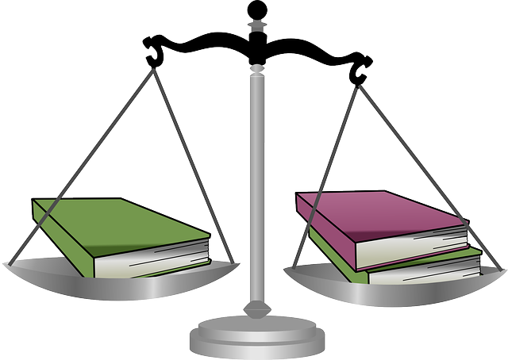

Essay Writing Service
Essay Writing Service
At Tutors246 our essay writing service guarantees top grades with a high quality essay or term paper that adheres to the particular referencing style you require. We can:
(1) Research the topic
(2)Type your essay
(3)Edit your Essay
(4)We also use turnitin essay checker to ensure your essay is 100% plagiarism free!
Referencing and Citation Styles
Turnitin WhitePaper Plagiarism SpectrumAPA Style
Your essay should be typed, double-spaced on standard-sized paper (8.5" x 11") with 1" margins on all sides. You should use a clear font that is highly readable. APA recommends using 12 pt. Times New Roman font.
Chicago Style
The Chicago Manual of Style presents two basic documentation systems: (1) notes and bibliography and (2) author-date. Choosing between the two often depends on subject matter and the nature of sources cited, as each system is favored by different groups of scholars.
The notes and bibliography style is preferred by many in the humanities, including those in literature, history, and the arts.
The author-date system has long been used by those in the physical, natural, and social sciences.
MLA Style
MLA (Modern Language Association) style is most commonly used to write papers and cite sources within the liberal arts and humanities. MLA has turned to a style of documentation that is based on a general method that may be applied to every possible source, to many different types of writing.When deciding how to cite your source, start by consulting the list of core elements. These are the general pieces of information that MLA suggests including in each Works Cited entry.
See more
OSCOLA Style

There are two golden rules for the citation of legal authorities. One is consistency.
The other is consideration for the reader. Legal writing is more persuasive when the
author refers to legal materials in a clear, consistent and familiar way. When it is easy
to identify and to find the author’s sources, it becomes easier for the reader to follow
the argument. The Oxford University Standard for Citation of Legal Authorities
(OSCOLA) is designed to help the author to achieve consistency and to make life
easier for the reader.